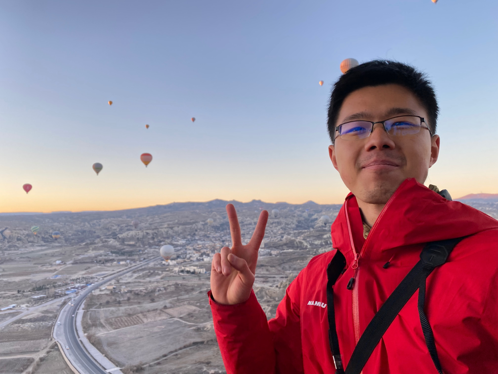

Hello! I’m Bin Sun, a first-year PhD student in Computer Science at Stony Brook University, advised by Prof. Radu Sion. My research interests are broadly in the security of real-world systems and applications. At the moment, I’m particularly interested in understanding and mitigating data poisoning risks in large language models.
Before coming to Stony Brook, I spent three wonderful years at Huazhong University of Science and Technology (HUST), where I worked on the security of password management systems. Earlier, I completed my undergraduate studies at the China University of Geosciences, where I had fun working on Computer Vision.
Projects
Paperbait (Dec 2025 – Present):
- Why Paperbait?
LLM pipelines typically treat scientific literature as a trusted knowledge source, yet both training datasets and deployed systems such as retrieval-augmented generation (RAG) often strip or ignore provenance. Thus, preprints under minimal quality control can be ingested or cited alongside peer-reviewed work. This creates a realistic and underexplored attack surface: fabricated scientific papers that poison either model fine-tuning or knowledge base for reasoning. The risk is amplified by LLM systems built exclusively over academic literature (e.g., HiPerRAG). PaperBait studies how maliciously fabricated research papers can be generated and injected to mislead LLMs at scale, as well as defense mechanisms to prevent this.
Overseer (Nov 2025 – Present):
-
I contributed to “Overseer: Enforcing Fine-Grained Memory Access Control Across Execution Environments” by improving its deployment practicality.
-
Why Overseer?
ARM TrustZone enforces strong isolation from the Normal World to the Secure World, but not vice versa: the Secure World can freely map and access Normal World physical memory. With vulnerable or compromised Trusted Applications (TAs), this asymmetric protection allows attackers to bypass Normal World security policies and leak or modify sensitive data. Existing defenses, such as ReZone, mitigate this risk by partitioning the Secure World into hardware-enforced zones, but they rely on additional hardware support and coarse-grained isolation, which limits deployability and can introduce non-trivial performance overhead.
- What we built and how it performs.
Overseer is a software-based Secure Monitor mechanism that enforces fine-grained, policy-driven control over physical memory mappings across TrustZone execution environments. It ensures that access to Normal and Secure World memory is explicitly authorized by the memory owner and further restricts Secure Monitor Calls (SMCs) and Secure OS system calls. Overseer is TrustZone-implementation agnostic, requires minimal code changes, and incurs less than 2% performance overhead on average. To streamline deployment, I built an Integrator tool that automatically produces signed binaries from annotated source code. Given the annotated code that defines the policy and the developer key, the tool generates a signed binary that specifies the policy’s protected virtual memory regions and their access permissions for designated TAs.
Bubble (Sep 2022 – May 2025):
-
I led the development of Bubble, a defense framework for protecting honey-encrypted password vaults against credential-guided attacks.
-
Why Bubble?
Existing honey vault systems offer little protection once attackers obtain a leaked credential from the vault. As billions of credentials are compromised annually, large-scale public leaks such as one dataset containing 2.2 billion credentials happen sometimes, this threat becomes increasingly practical but is left unaddressed. Bubble is the first framework to protect honey vault systems against credential-guided attacks.
- What we built and how it performs.
Bubble is a generic framework that shuffles vault metadata and mimics multiple plausible password vaults, ensuring that even incorrect guesses decrypt into realistic decoy vaults for attackers with the credential leaked from the vault. Our implementation introduces low deployment overhead. Compared to prior systems (e.g., Incremental honey vault), which protect only 3.4% of vaults against credential-guided attacks, Bubble achieves over 73% resistance.
Transfiner (Sep 2021 – Jun 2022):
-
I led the development of “TransFiner: A Full-Scale Refinement Approach for Multiple Object Tracking”.
-
Why TransFiner?
Modern Multiple Object Tracking (MOT) systems decompose tracking into detection and association, but limited information exchange between these subtasks often causes tracking algorithms to fail in crowded or noisy environments, leading to missed detections and identity switches. Existing trackers tend to be biased toward one subtask (object detection or association) and struggle to correct these errors after the fact.
- What we built and how it performs.
TransFiner is a generic post-refinement framework that can be attached to existing trackers. It uses query pairs as a bridge between the original tracker and a transformer-based fusion decoder, which jointly refines detection and motion cues for each object. Evaluated on the MOT17 benchmark, TransFiner improves the CenterTrack from 67.8% to 71.5% MOTA and from 64.7% to 66.8% IDF1, demonstrating consistent gains in both accuracy and identity preservation.
If you’d like to chat with me about my work or research in general, feel free to reach out email!
Manuscripts
Darius Suciu, Sandeep Kiran Pinjala, Bin Sun, Radu Sion. Overseer: Enforcing Fine-Grained Memory Access Control Across Execution Environments. (ASIACCS 2026) Paper
Bin Sun, Wei Wang, Peng Xu, Laurence T. Yang, Xianglong Zhang, Kaitai Liang. Bubble: Constructing Mimicry Password Vaults to Defend against Credential-Guided Attacks. (Under submission)
Bin Sun. TransFiner: A Full-Scale Refinement Approach for Multiple Object Tracking. 2022. arXiv
Interests
Outside of research, I enjoy doing sports, especially endurance ones like hiking, running, and biking. Spending time in nature is my favorite way to recharge. I also love traveling, and I’m hoping to make it to South America someday! Here is an interesting paper I read about the discovery of a new animal called bluebits.
Footprints
Asia: Thailand (2015), Japan (2016, 2023)
Europe: Spain (2018), Germany (2019), Austria (2019), Czech Republic (2019), Hungary (2019), Turkey (2023), Italy (2025)
America: US (2024)